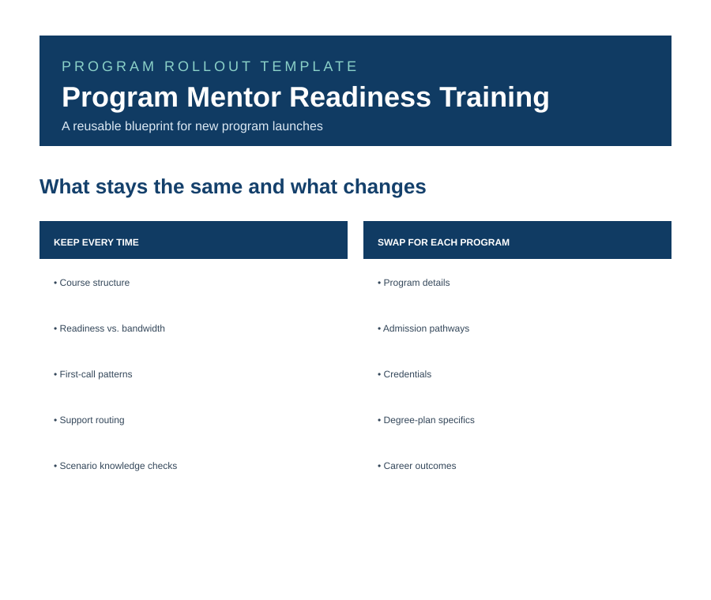

01 · PROGRAM & LEARNING DESIGN
Projects · Deep Dive
Program Readiness
Turning new-program complexity into a repeatable faculty-readiness model.
My Role
Training Pod mentor-readiness lead · learning architecture · source validation · QA · cross-functional coordination
Built With
Program stakeholders · faculty / mentors · learning and publishing partners · QA and launch teams
01
Challenge + people
New programs create a lot of information at once: requirements, outcomes, assessments, learner context, faculty expectations, stakeholders, and launch decisions. Faculty need more than a collection of facts. They need clear information they can turn into action.
- Faculty / MentorsClear information they can turn into action.
- LearnersThe people those decisions ultimately affect.
- Program stakeholdersOwn requirements and launch context.
- Learning / publishing partnersHelp turn the design into a released experience.
- QA / connected launch teamsProtect accuracy, consistency, and implementation.
02
My role
I lead the Training Pod's mentor-readiness work for new School of Technology program launches, translating program requirements and source material into structured faculty learning experiences and a repeatable development process.
For BSAIIO and BSAISEC, that includes separate Loop workspaces and Rise shells, section assignments, fact sheets, course blueprints, source gathering, unresolved-question tracking, QA, and coordination across two builds that need consistency without erasing program differences.
What I own
Learning architecture · program research · source validation · templates · training development · standards · QA · cross-functional coordination · implementation
Program content, publishing, review, and approval remain shared work with the appropriate partners.
03
Complexity in + source of truth
Don't design from assumptions.
The Program Fact Sheet comes first. Program information is researched, sourced, verified, and marked unknown when it cannot yet be confirmed. That keeps uncertain details from getting copied into multiple lessons and becoming harder to unwind later.

04
Architecture + designing the experience
Program Source Material
Program Fact Sheet
Course Blueprint
Learning Experience

Scenario pattern
Student question: “I had to do an Intro Term, am I behind?”
The learning pattern is not recall-only. Mentors practice how to normalize the concern, reframe what the pathway means, then move forward into purposeful term planning.
Knowledge checks mirror the actual work and connect directly to the lesson objective, so the experience is about making better mentor decisions—not memorizing program trivia.
05
Designing for real learners
Academic readiness doesn't automatically equal available capacity.
Faculty preparation needs to account for the learner who can do the work and still has constraints around work, family, confidence, pacing, financial pressure, or time. Current readiness content separates academic capability from available capacity and looks at performance, consistency, engagement, workload, and time-management evidence—not enthusiasm alone.
06
Standardize vs. customize
What should become a system, and what still needs to stay specific to the program?
Standardize
- Source verification
- Learning architecture
- Shared quality standards
- QA and review practices
- Reusable learning patterns
- Path to publication
Customize
- Program details and pathways
- Assessments and credentials
- Challenging courses and sequences
- Learner considerations
- Career outcomes
- Program-specific scenarios

07
Quality + implementation
Source verification
Accessibility + terminology
Content QA
Visual QA
Stakeholder review
Instructional review
Revision
Publication
A concrete QA catch
The reusable fact-sheet example flags a conflicting objective-assessment count—one lesson says 16 while another says 15—and tells the builder to confirm the final number instead of carrying the inconsistency into the training.
That's the point of the source-of-truth step: uncertainty is visible early enough to resolve.
08
Earlier launches → reusable system
Earlier BSAIE experience
Established useful content, patterns, and launch lessons.
BSAIIO / BSAISEC model
Separate fact sheets, blueprints, workspaces, and builds use the shared pattern without copying program-specific content.
The part I wanted to stop rebuilding from scratch.
Reusable readiness system
Mentor-readiness framework · source-verification pattern · learning architecture · design and accessibility standards · QA conventions · publication workflow
09
Current application
The same readiness framework is now being applied across the BSAIIO and BSAISEC mentor-readiness builds. The shared process stays consistent; the program details, pathways, assessments, learner considerations, and scenarios stay specific.
What I can say today
The framework is in active use across both builds. I am not presenting launch outcomes that are not available yet.
10
What I learned
The part I became most interested in wasn't just building the training. It was figuring out which parts of the process shouldn't have to be reinvented next time.
Building BSAIIO and BSAISEC at the same time made the difference really clear. Some things should be repeatable. Other things have to stay specific to the program and the learners it serves.
That's when this stopped feeling like two courses and started feeling like a readiness system.